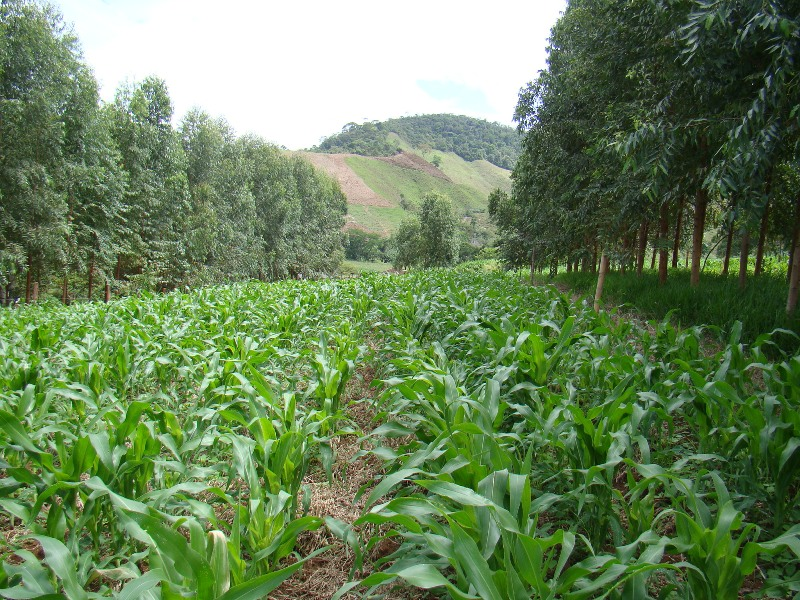
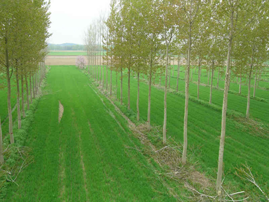

|  |
Introduction : Agroforestry is a collective name for land-use systems involving trees combined with crops and/or animals on the same unit of land. It combines
1) Production of multiple outputs with protection of the resource base;
2) Places emphasis on the use of multiple indigenous trees and shrubs;
3) Particularly suitable for low-input conditions and fragile environments;
4) It involves the interplay of socio-cultural values more than in most other land-use systems; and
5) It is structurally and functionally more complex than monoculture. |
 |